Velkommen til Havblink Hvidvin
Midt mellem Svendborg og Langeland i det milde klima ved den sydfynske østkyst, finder man Vingården Havblink. Her bliver der dyrket og fremstillet økologisk kvalitetshvidvin på bæredygtig manér - og det er vi pavestolte af.
Vi brænder for at dele ud vores passion, fortælle historien og lade Hr og Fru Danmark i få øjnene op for den kvalitetsvin, der dyrkes herhjemme.
Gå på opdagelse
Her på vores hjemmeside finder du viden og historier om dansk vinproduktion, vores egne vine og vores bærdygtige metoder.
Du finder også guides til at finde den perfekte vin til festmiddagen, hyggeaftenen eller værtindegaven.